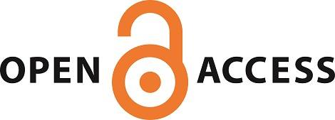

The ETH-Zurich, Switzerland now has central invoicing agreement with Frontiers
We are delighted to inform you that ETH Zurich holds a Central Invoicing agreement with Frontiers
The ETH-Bibliothek covers Article Publishing Fees for corresponding authors affiliated with the University, in any of the Frontiers journals.To access the University OA guide and for information on whether you qualify for funding please visit Open Access at ETH Zurich or contact the ETH-Bibliothek’s E-Publishing Office at e-publishing@library.ethz.ch
To find out more about the University’s OA policy, click here.
Posted On: 2014-12-17T00:00:00

Content Date: 2014-12-17
Download Date: 2021-07-10
Document ID: L0C04F1VF